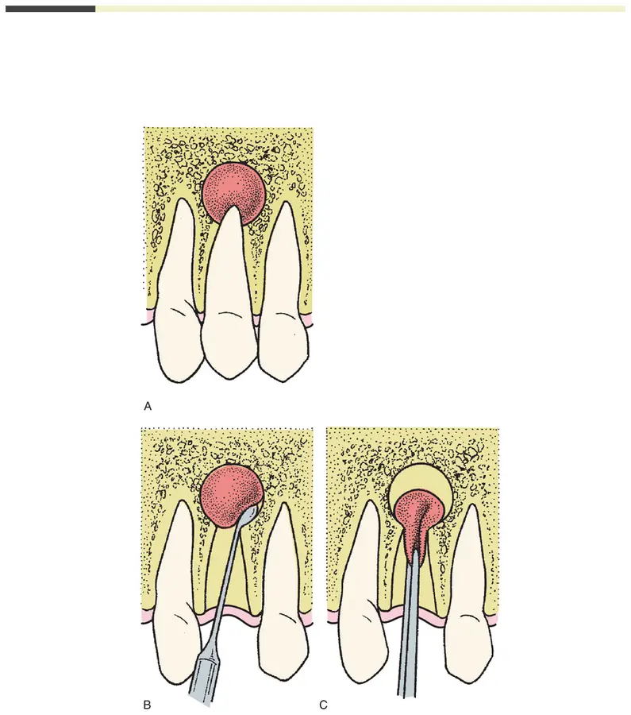
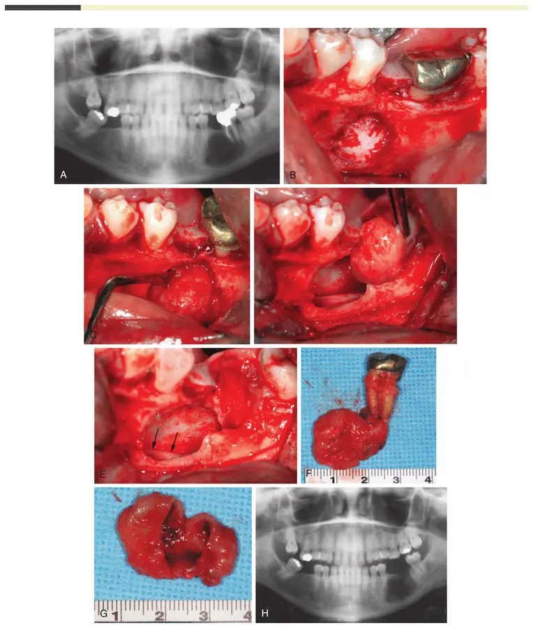

نسخه استخراجشده؛ ترجمه یا تأیید علمی انجام نشده است. وضعیت: captured
تعریف: انوکلئاسیون فرایندی است که به برداشت کامل یک ضایعهی کیستیک میانجامد. بهطور دقیق، یعنی بیرون کشیدن کل ضایعهی کیستیک بدون پارگی.

و چرا این اصلاً ممکن است؟ کیست بهخاطر لایهی بافت همبند فیبروزی میان جزء اپیتلیال (که سطح داخلی کیست را میپوشاند) و دیوارهی استخوانی حفره خودش را برای این تکنیک مناسب میکند. این لایه یک صفحهی جدایش برای کندن کیست از حفرهی استخوانی فراهم میکند و انوکلئاسیون را شبیه کندن پریوست از استخوان میسازد.
و چرا «بدون پارگی» مهم است: انوکلئاسیون باید با دقت انجام شود تا کیست در یک تکه و بدون تکهتکه شدن برداشته شود — که با بالا بردن احتمال برداشت کامل، شانس عود را کم میکند.
ولی صادقانه بگوییم: در عمل، حفظ معماری کیستیک همیشه ممکن نیست، و پارگی محتویات کیست ممکن است حین دستکاری رخ دهد.
اندیکاسیون: انوکلئاسیون درمان انتخابی برای برداشتن کیستهای فک است و باید برای هر کیست فک که بتوان بیآنکه ساختارهای مجاور را بیجهت قربانی کرد بیخطر برداشت، به کار رود.
دو مزیت:
و معایب — که همگی یک الگو دارند: اگر هر یک از شرایطی که در اندیکاسیونهای مارسوپیالیزاسیون میآید برقرار باشد، انوکلئاسیون میتواند زیانبار باشد. برای نمونه:
پس هر کیست باید جداگانه سنجیده شود، و درمانگر باید سود و زیان انوکلئاسیون را در برابر مارسوپیالیزاسیون بگذارد.
نخست یک نکتهی آنتیبیوتیک: مصرف آنتیبیوتیک غیرضروری است مگر آنکه کیست بزرگ باشد یا وضعیت سلامت بیمار آن را اقتضا کند.

کیست پریاپیکال (رادیکولار) — شایعترین همهی ضایعات کیستیک فک — از التهاب یا نکروز پالپ دندان ناشی میشود.
و حالا خودِ تکنیک کورت — چهار نکتهی دقیق:
و دربارهی اعصاب و عروق: در کیستهای بزرگ یا نزدیک ساختارهای عصبی-عروقی، اعصاب و رگها معمولاً کنار زدهشده به یک سمت حفره یافت میشوند — چون کیست بهآرامی گسترش یافته. باید از آنها پرهیز شود یا با کمترین ترومای ممکن و کمترین دستکاری برخورد شوند.
پس از برداشتن: حفرهی استخوانی باید از نظر باقیماندههای بافتی بازرسی شود. شستوشو و خشک کردن حفره با گاز به دیدن کل حفره کمک میکند؛ بافت باقیمانده با کورت برداشته میشود؛ و لبههای استخوانی نقص باید پیش از بستن با سوهان صاف شوند.
و یک اندیکاسیون کورتاژ تهاجمی: کیستهایی که ریشهی دندان را احاطه کردهاند یا در نواحی غیرقابلدسترس فکاند، به کورتاژ تهاجمی نیاز دارند — برای برداشتن قطعات پوششی که با تودهی اصلی دیواره برداشته نشدند.
بستن و ترمیم: پس از انوکلئاسیون، بستن اولیهی آببند با بخیههای درستجایگرفته باید به دست آید. حفرهی استخوانی با لختهی خون پُر میشود که با گذشت زمان سازمان مییابد.